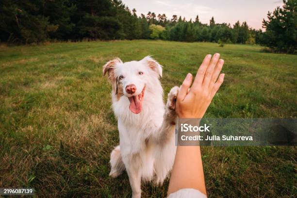
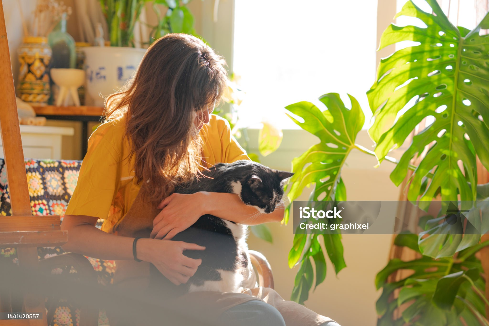
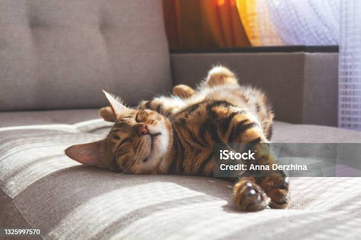

Rex
"Un paseo, un poco de atención y muchas caricias. Con eso soy feliz."

Porque ellos también son familia.
CanguPet nace de una situación que nosotros mismos hemos vivido. Tenemos mascotas y sabemos lo complicado que puede ser organizar su cuidado cuando tenemos que ausentarnos.
Muchas veces acabábamos recurriendo a familiares, amigos o conocidos. Y aunque siempre agradecíamos su ayuda, no siempre podían estar disponibles cuando los necesitábamos.
Fue entonces cuando pensamos que encontrar ayuda para cuidar de nuestras mascotas debería ser mucho más sencillo.

A partir de esa idea decidimos crear CanguPet, un espacio pensado para conectar a personas que necesitan ayuda con otras que pueden ofrecer cuidados a sus mascotas.
La idea es que cada persona pueda encontrar una opción que se adapte a sus necesidades y a las de su animal, de una forma sencilla y cercana.
Queremos que cuidar de tu mascota no suponga tener que cambiar tus planes o depender siempre de las personas de tu entorno.
Nuestro objetivo es ofrecer una alternativa sencilla para que puedas continuar con tu día a día con tranquilidad.
Porque cuando ellos están bien, nosotros también.
Ellos son dos de los pequeños protagonistas de esta historia y, en parte, la inspiración detrás de CanguPet.

"Un paseo, un poco de atención y muchas caricias. Con eso soy feliz."

"Tengo mis sitios favoritos y mis propias rutinas. Si respetas eso, nos vamos a llevar genial."